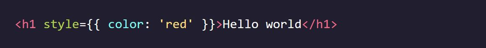
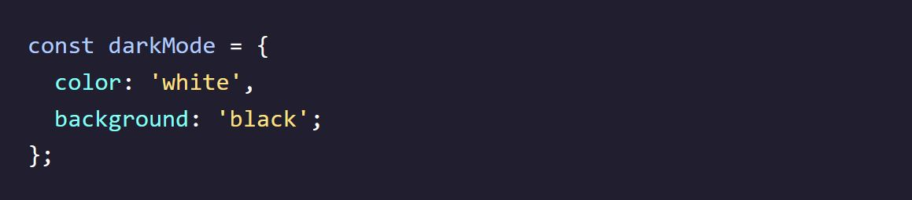
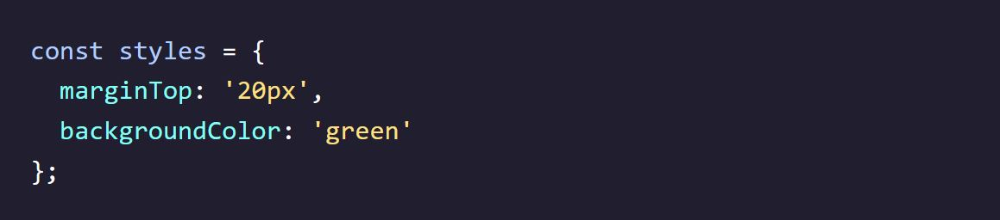
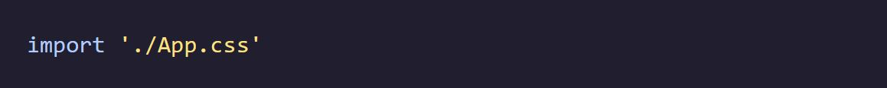
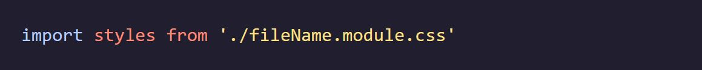
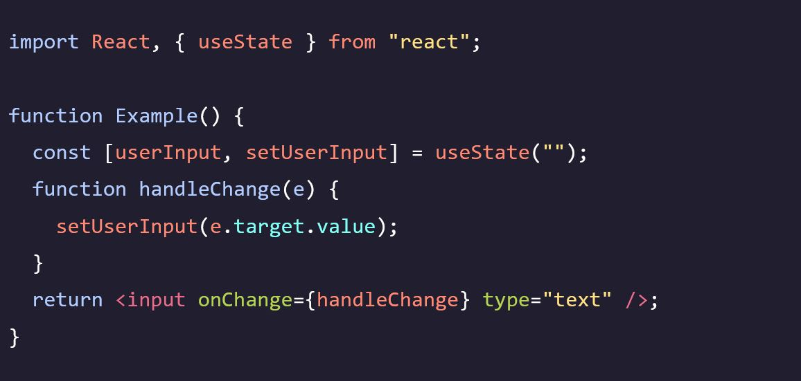
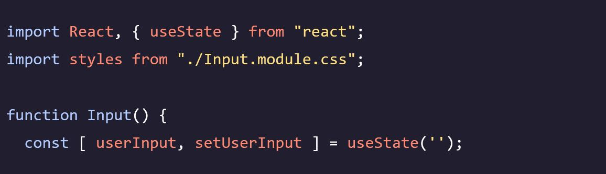
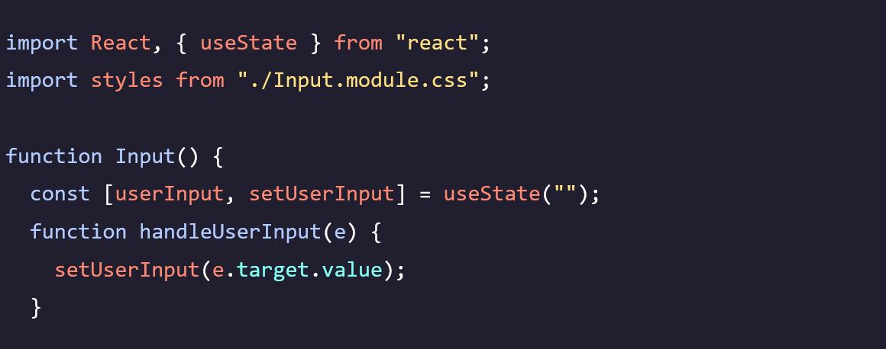
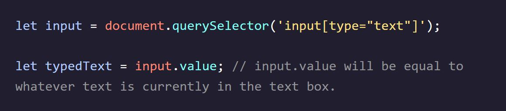

Codecademy - Learn React: Additional Basics
Notes taken while going through the Codecademy Learn React: Additional Basics course
React Styles
Inline Styles and Style Object Variables
- React provides two main approaches for applying styles: inline styles and style object variables. 
- Inline styles are written as attributes and are enclosed in double curly braces: style={{ property: value }}.
- The outer curly braces indicate that the content should be treated as JavaScript.
- The inner curly braces create a JavaScript object literal to define the styles.
- Inline styles can become messy when applying multiple styles.
- An alternative approach is to store a style object in a variable. 
- To do this, initialize an object with style properties and values.
- The style object variable can then be injected using the style attribute: style={styleObject}.
- This allows for cleaner and more organized application of styles.
- The style object can contain multiple properties, such as color, background, font-size, etc., to define various aspects of the component's appearance.
- The values assigned to the properties can be strings, numbers, or other valid CSS values.
Style Syntax
- When styling components with JSX in React, CSS property names are written using camelCase. 
- This is because hyphens are reserved operators in JavaScript, and using camelCase ensures consistency with the property names in the DOM style JavaScript object.
- Style values in JavaScript are usually specified as strings, even for numeric values, to allow for specifying units.
- If a style value is written as a number, the unit 'px' is assumed.
- For example, { fontSize: 30 } sets the font size to 30 pixels.
- To use units other than 'px', the value should be specified as a string, such as { fontSize: "2em" }.
- It's also valid to specify the 'px' unit in a string, although it's redundant.
- Styles can be defined in a style object variable using this syntax, where each property is written as propertyName: value.
Multiple Stylesheets
- To make styles modular, organized, and reusable, it's recommended to create separate stylesheets for each component in React. 
- Stylesheets can be imported using the import keyword, such as import './App.css'.
- However, when using multiple stylesheets with the same class names, there can be style conflicts.
- CSS modules can be used to prevent these conflicts and make styles scoped to specific components. 
- To use CSS modules, the stylesheet file should be named in the format fileName.module.css, where fileName is replaced with the component name.
- The CSS module file should be imported into the component file using import styles from './fileName.module.css'.
- The imported styles object will hold the class selectors defined in the CSS module.
- To apply styles from the CSS module, the className attribute should be used instead of class.
- React uses className to avoid conflicts with the reserved JavaScript keyword class.

Review: React Styles
- React components can be styled in a number of different ways: inline styling, object variable styling, stylesheets, and CSS modules.
- Inline styling can be used to apply styles to a single element. Inline styling can be done by giving the element an attribute named style whose value is an object literal surrounded in curly braces.
- An object variable can also be used to apply a style to a single element. The syntax is similar to inline styling, but rather than passing an object literal, the name of the variable is passed instead.
- Style names in React must be in camelCase. For example, background-color becomes backgroundColor.
- In React, a number style value is automatically interpreted with px.
- Styles can be separated and stored into CSS module files. The styles can be imported and used by applying className attributes to the relevant elements.
React Forms
Input onChange
- In React, the state of a form can be managed by the component itself, unlike in regular HTML forms where the browser handles the form state.
- Updates to the form state in React are triggered by the onChange event.
- The onChange event fires when the user interacts with an input field, such as entering or deleting characters.
- When the onChange event is triggered, the component can update its state to immediately reflect the changes made by the user.
- By updating the component state, React can automatically update the view and provide a responsive user interface.
Write an Input Event Handler
- An event handler function is used to handle user interactions with an 'input' element in React.
- The event handler function is called whenever a user enters or deletes any character inside the 'input' element.
- The event handler function listens for change events that occur in the 'input' element. 
Set the Input's Initial State
-

- The handleUserInput() function updates the userInput state with the text entered or deleted in the 'input' field.
- The state hook useState is used to manage the userInput state.
- The initial value of userInput should be set using the state hook's initial state value.
- In this case, the initial text in the 'input' should be an empty string to represent that no text has been entered yet.
Update an Inputs Value
- The value prop of an input element in React is used to control and sync the input's value with the component's state. 
- Setting the value prop ensures that the input's value reflects the component's state, providing consistency and avoiding potential bugs.
- By using the onChange event, we can update the component's state with the new value entered in the input field.
- When the component's state is updated, the input's value prop is set to the new value, and the component re-renders.
- This approach makes the component's state the "source of truth" for the input's value, ensuring that form data remains consistent and can be easily managed and submitted.
- It is important to apply this pattern for inputs to keep them in sync with the component's state and provide a reliable and controlled user input experience.
Controlled versus Uncontrolled
- An uncontrolled component in React maintains its own internal state. 
- An uncontrolled component, such as a regular 'input' element, keeps track of its own data (e.g., the text entered in an input field) internally.
- On the other hand, a controlled component in React does not maintain any internal state.
- Controlled components rely on external sources, usually through props, to control and access their data.
- By providing the value attribute to an 'input' element in React, it becomes controlled, meaning it no longer uses its internal storage to track its data.
- Instead, the value of the controlled component is controlled and accessed through props, usually managed by the component's state.
- Using controlled components is a common and recommended approach in React for managing form inputs and keeping the component's state as the "source of truth" for the input's value.
Review: React Forms
- The state of a React form is managed by the component, and updates are triggered by the onChange event.
- The onChange event uses an event handler to capture changes and determine what actions to take.
- A React form uses the State hook to store the value of the input field in the component’s state. The state can then be updated with the state setter.
- React components can be controlled or uncontrolled. Most React forms are controlled, as they control the input’s value with the state.